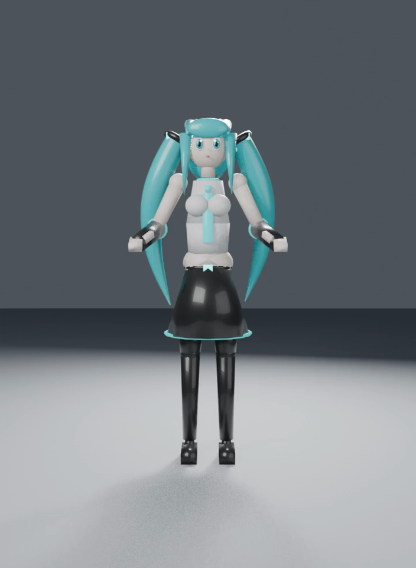

仓库内所有 AI 生成动画，点击画面即可播放 · 展开卡片下方「详细信息」查看测试过程 · 最后更新 2026-09-17
| 目标 | 验证 agent（Hermes）驱动思考档位模型，能否仅凭自然语言指令零人工干预完成 3D 动画全流程 |
| 输入 | 仅 3 条指令：① Blender 做初音模型 → ② 继续 → ③ 验收通过后做 30s 舞蹈视频（无参考图、无分镜） |
| 消耗 | 227 条消息 · 输入 53.0 万 / 输出 10.9 万 token（思考 6.3 万）· 108 次工具调用（vision_analyze ×19 自检） |
| 环境 | Mac mini M2 16GB · macOS 26.6.2 |

| 目标 | 用本地 ComfyUI 的 MiniMax H3 对左侧 qwen 原版做优化重生成，横向对比效果 |
| 首帧 | 沿用原成片第 1 帧（上图），704×960，保持角色一致 |
| 音频 | H3 原生同步音频生成（J-pop 舞曲提示词），qwen 原版为程序化合成 BGM |
| 限制 | H3 训练帧范围 124–362 帧（5–15s），30s 原片无法单次重生成，故输出 15s |